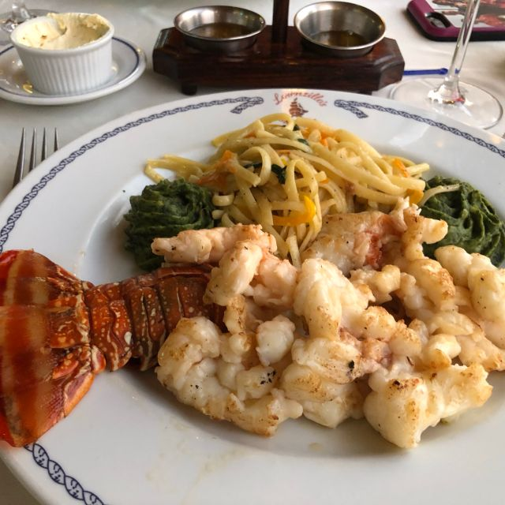
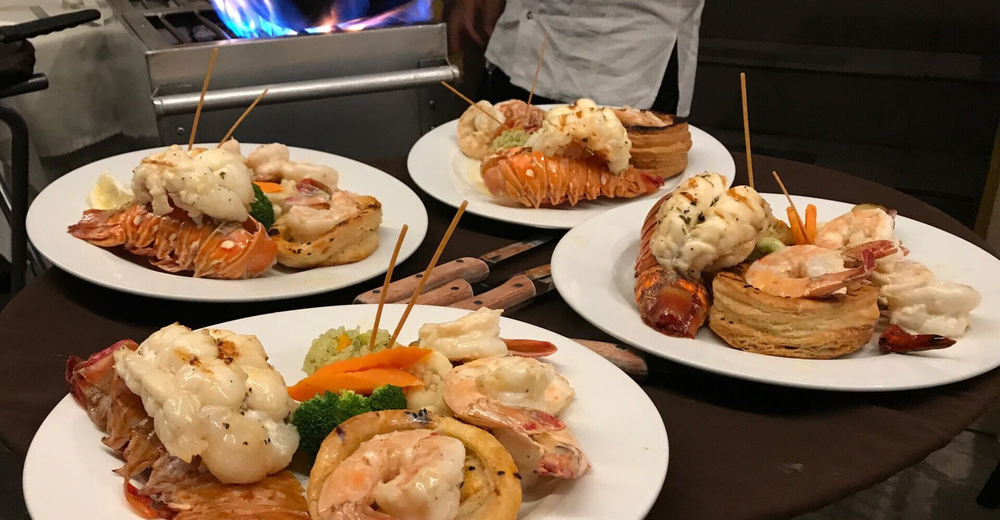
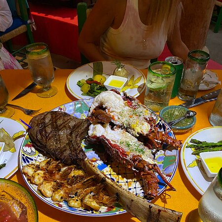
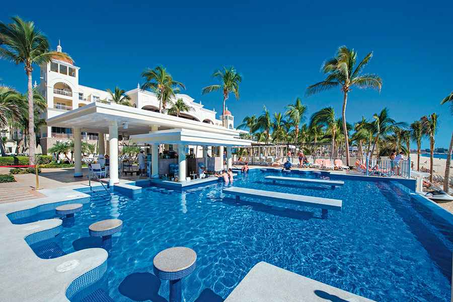
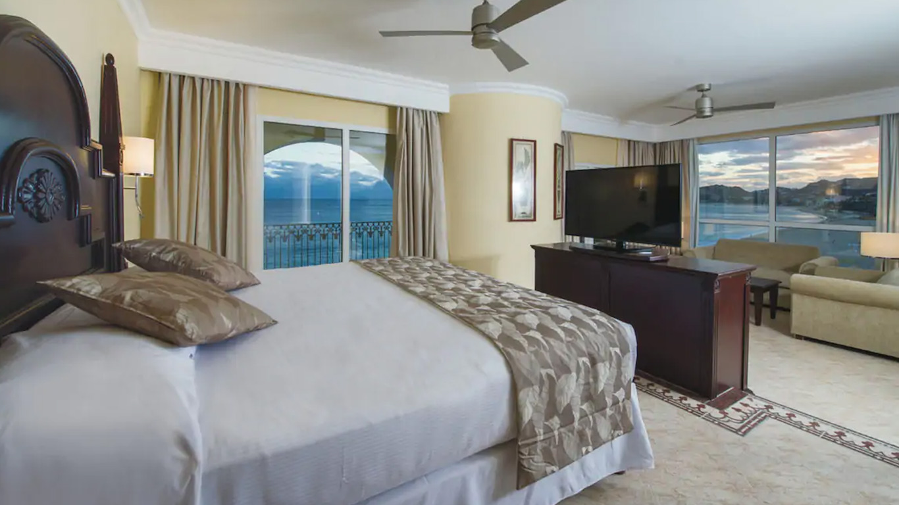
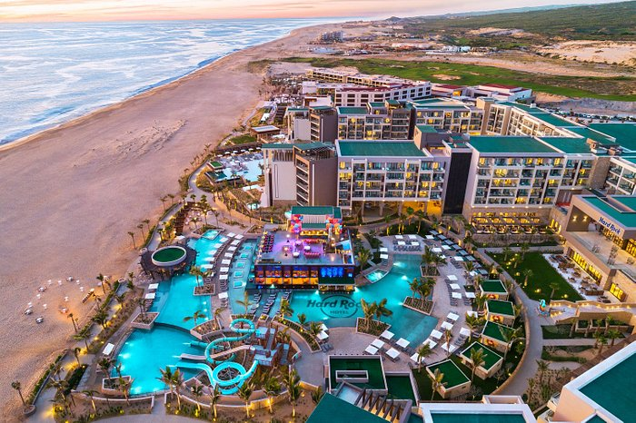
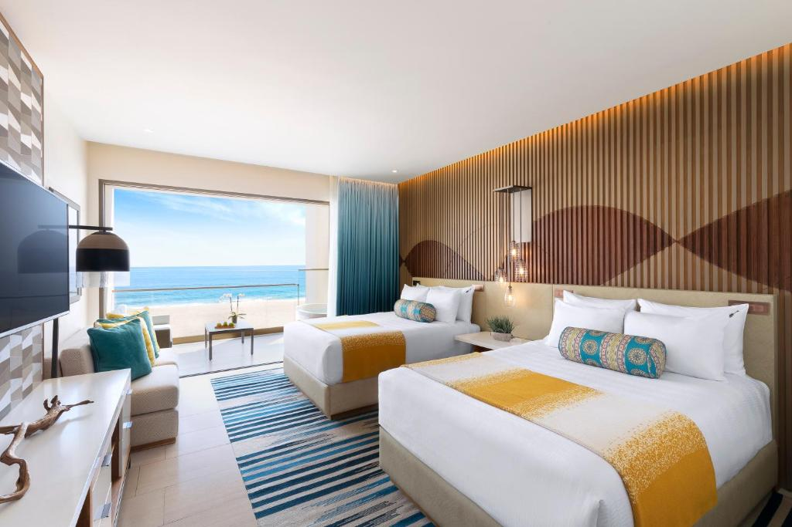

Top Restaurants in Cabo
Lorenzillo's

Lorenzillo's is a renowned seafood restaurant located in Cabo San Lucas, Mexico. Specializing in fresh seafood dishes, its waterfront location offers stunning views of the marina or ocean. The restaurant is particularly famous for its lobster preparations, served in various styles such as grilled, thermidor, or with a rich garlic butter sauce. With an inviting ambiance and attentive service, Lorenzillo's provides guests with a memorable dining experience. For the latest details, including the menu and operating hours, it's advisable to check the official website or contact the restaurant directly.

Situated waterfront at the Marina in Cabo San Lucas, Alexander?s Restaurant couples gourmet European cuisine with the inspiring beauty of Los Cabos bringing you a world-class dining experience. Chef and Owner Alex Brulhart invites you to take a table and relax while enjoying his culinary creations. Swiss, French, and Tropical influences tempt the senses? appetizers and entrees flamb?ed tableside coax complex flavors and aromas from the pan. Voted a ?Top Table? in Cabo San Lucas three years in a row, Alexander?s Restaurant is known as one of the best restaurants in Cabo, and it is a fine dining experience you will want to relive time and time again.

Edith's is a popular restaurant in Cabo San Lucas that offers a distinctive Mexican-inspired menu. The restaurant is known for its charming and vibrant ambiance, featuring traditional Mexican decor and an outdoor seating area. Edith's is especially famous for its seafood dishes, incorporating fresh and locally sourced ingredients.
Luxurious Hotels in Cabo


Riu Hotel offers a luxurious stay in the heart of Cabo San Lucas. Experience stunning ocean views from your room, enjoy world-class amenities, and unwind in the resort's beautiful surroundings. Whether you're lounging by the pool or relaxing in your well-appointed room, Riu Hotel provides a premium vacation experience.


Indulge in the ultimate rockstar experience at Hard Rock Hotel in Cabo San Lucas. From stylish accommodations to vibrant nightlife and world-class dining, Hard Rock Hotel promises an unforgettable stay. Immerse yourself in luxury, enjoy the beachfront location, and let the rock and roll spirit of Cabo elevate your vacation to a whole new level.